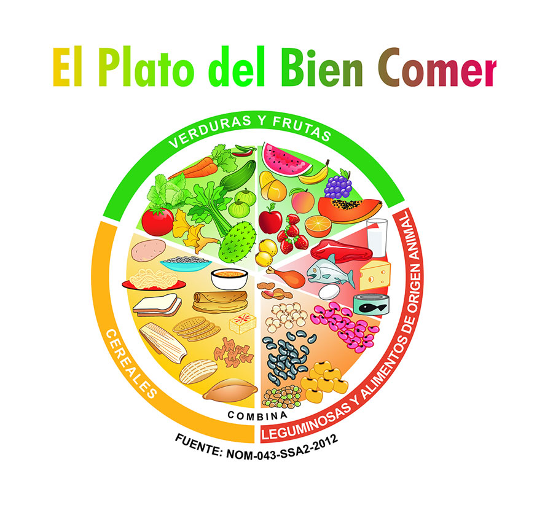
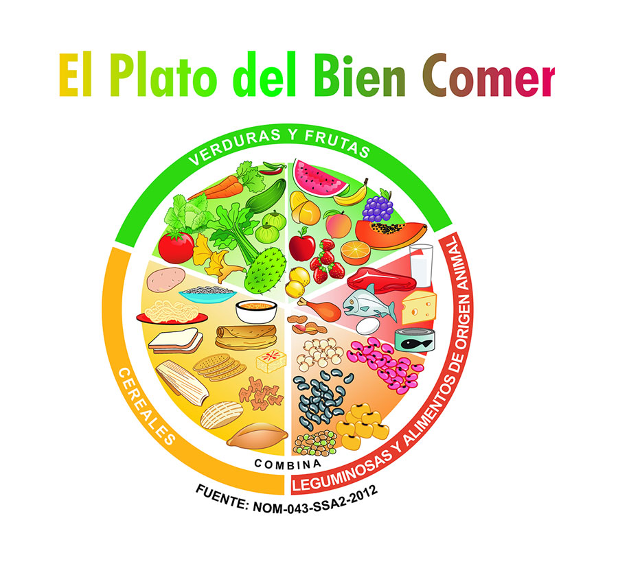

La caloría es la unidad básica de energía
que obtenemos de los alimentos.
Ocupamos energía para todo desde correr, respirar, pensar o digerir.
Por lo que es necesario cuidar nuestra alimentación
y consumir lo adecuado a nuestro estilo de vida,
las calorías no consumidas se almacenan como grasas.
El control del peso es cuestión de las calorías
que tomas frente a las calorías que quemas al hacer actividad física.
La siguiente calculadora caloríca es
solo una referencia de la cantidad de calorias
basadas en la alimentación, las calorias ideales dependen de cada individuo
por su edad, sexo, actividad fisica, peso, etc...
La caloría es una unidad de medida de la energía,
es decir, la cantidad necesaria de calor en forma de energía
para poder producir un incremento de 1ºC en una masa de agua
de 1 gramo. En nutrición se usa esta medida puesto que el
organismo
necesita energía para funcionar correctamente:
funcionamiento del corazón, del sistema musculoesquelético,
del
sistema nervioso, etc.
Una kilocaloría es la medida del valor
energético de la comida.
Nuestro cuerpo quema calorías utilizando ATP}
(adenosin-trifosfórico) que es un nucleótido que obtiene energía
de las células. La energía llega a nuestro organismo a través
de la oxidación de los alimentos que ingerimos.
 

Total de calorias: 0 kcal

Fuentes de información o formas alternativas
de calcular las calorias en las siguientes paginas: